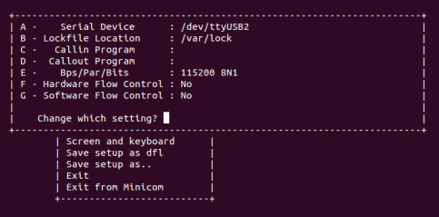
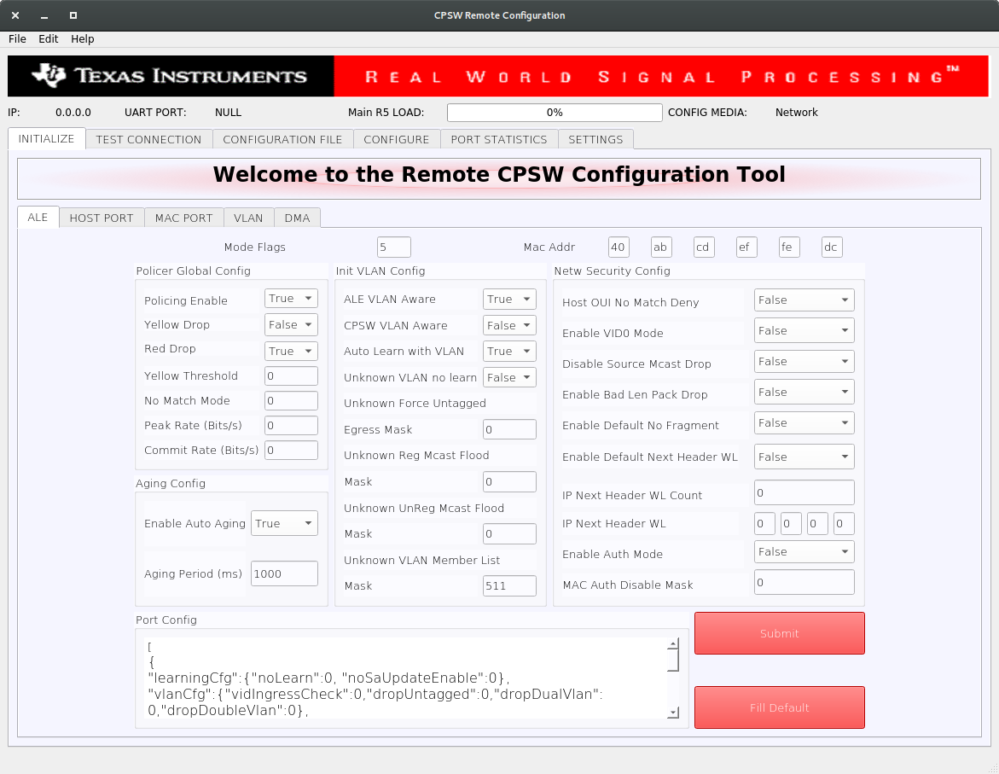
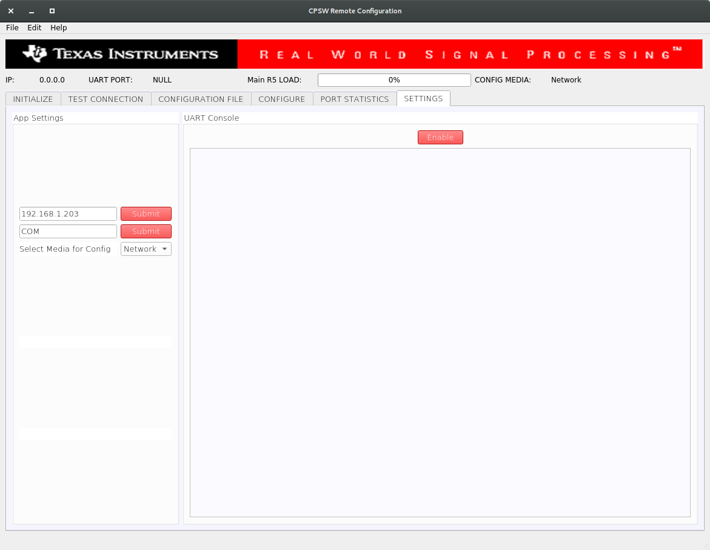
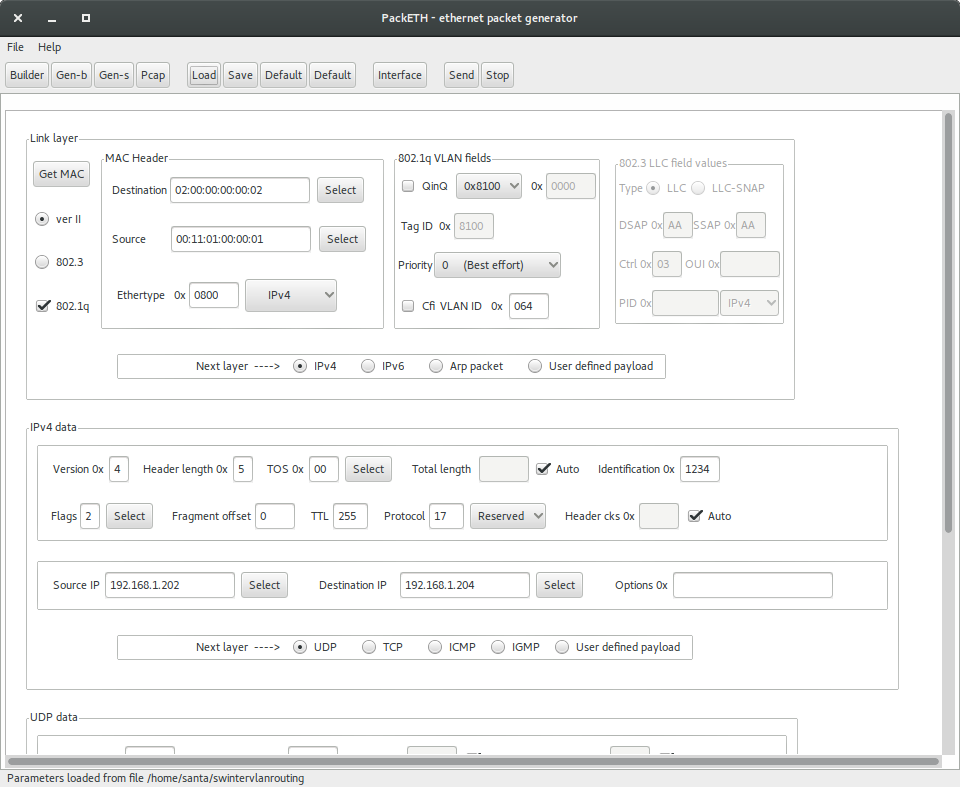

|
Ethernet Firmware
|
|
Ethernet Firmware
|
The applications that are part of this demo show Jacinto 7 integrated switch differentiating features like interVLAN routing in hardware, firewall, packet header based classification and rate limiting along with Layer-2 switching with VLAN, multicast and software-based interVLAN routing among the ports. The traffic forwarding process among the ports don't require CPU involvement or DMA bandwidth as everything is completely handled by CPSW hardware.
The intention behind this demo which encompasses multiple sub-demos is to show the switching capabilities of the J721E integrated Ethernet Switch (CPSW9G) as well as the software developed which includes CPSW IP low-level driver (CPSW LLD), TI NDK TCP/IP integration and Ethernet Switch Firmware (EthFw) application.
Below are top-level features demonstrated:
The Ethernet Firmware demo application is in charge of:
This application runs on the J721E EVM with GESI (Gateway/Ethernet Switch/Industrial Expansion Board) board. The demo requires two PCs running Ubuntu connected to the GESI board in order to demonstrate the L2 switching capabilities as well as to generate and monitor Ethernet traffic at different stages of the demo. The connection diagram is shown below.

Note: The IP addresses in above diagram can change based on your network configuration.
The demo application has a HTTP server hosting a web page which can be accessed by any external device connected to the CPSW switch.
A GUI-based control interface to enable/disable/configure features like VLAN, multicast, rate limiting, interVLAN routing and also to show the load of the CPU is added in the release.
A video streaming application, like Plex or VLC, can be used to demonstrate Ethernet packet switching functionality between multiple PCs. The media server will run on one PC and the client(s) will run on other PC(s), all connected to the switch via GESI board.
This demo uses Plex media system for video streaming. Plex clients can access media content via web interface, so any PC connected to the switch can easily access it.
Note: Please check licensing information and terms of usage of Plex TV media server and make sure it adheres to your organization's policy before using and configuring it.
A Remote Client application for the Main R5F core 1 is also available as part of this demo. This application runs a local NDK stack on a virtual network device which demonstrates the TI RTOS switch remote core integration.
This application depends on multiple components and are detailed in sections below:
Not applicable.
Note: Plex server is required only in PC 1.
Note: packETH tool is required only in PC 1.
Install packETH packet generator tool on the Linux PC. The Ubuntu installation instructions can be found in their website.
The packEth configurations used in this demo are included in the Ethernet Firmware package at <ETHFW_PATH>/docs/packeth_configurations/
Note: Please check licensing information and terms of usage of packETH tool and make sure it adheres to your organization's policy before using and configuring it.
The GUI tool to send configurations is developed using Python3 and PyQt. Pip3 can be used to install additional Python modules required by the GUI tool.
Note: The GUI tool can be executed from either PC 1 or PC 2, so Python and its dependencies must be installed only on the selected PC.
Install Python3, PyQt, pip3 and other dependencies:
sudo apt install python3-pip pip3 install --user pyqt5 sudo apt-get install python3-pyqt5 sudo apt-get install pyqt5-dev-tools sudo apt-get install qttools5-dev-tools pip3 install jsonschema pyserial serial xmodem
Note: Wireshark packet analyzer tool is required in both PC 1 and PC 2.
Refer to the Wireshark installation instructions on Ubuntu in this website.
Note: iperf network performance measurement tool is required on either PC 1 or PC 2.
Install iperf in the selected Ubuntu PC(s):
sudo apt-get install iperf
Note: bmon is required only on PC 2.
bmon is a network bandwidth monitoring tool that will be used in this demo to monitor the traffic received on PC 2 during the interVLAN tests.
Install bmon in the Ubuntu PC as follows:
sudo apt-get install bmon
Note: DHCP server is required only in PC 1.
A DHCP server is required to assign IPs dynamically to all internal cores (A72, Main R5F core0, Main R5F core1) or external devices (PC 1, PC 2) in this demo.
subnet 192.168.1.0 netmask 255.255.255.0 {
range 192.168.1.200 192.168.1.210;
...
}
192.168.1.<pc1> and the restart the DHCP server.sudo ifconfig <ethDeviceName> 192.168.1.x netmask 255.255.255.0 up
| Device | IP address |
|---|---|
| PC 1 (Plex server) | 192.168.1.202 |
| J721E Main R5F core (running EthFw) | 192.168.1.203 |
| PC 2 (Plex client) | 192.168.1.204 |
| J721E A72 core (virtual net driver) | 192.168.1.205 |
| Default Gateway | 192.168.1.1 |
| Subnet Mask | 255.255.255.0 |
Install Code Composer Studio and setup a Target Configuration for use with J721E EVM. Refer to IDE (CCS).
XDS110 (J3).UART (J44).SW8 and SW9 for no-boot mode:Open up a serial terminal for UART2 communication. This terminal will show logs from MCU2_0 core where the demo application runs.

Note: Linux running on A72 core is not compatible with CCS boot mode.
firmware directory of Linux file system in SD card: cp <SDK_INSTALL_PATH>/ethfw_xx_xx_xx/out/J721E/R5F/SYSBIOS/debug/app_remoteswitchcfg_server.xer5f <MOUNT>/rootfs/lib/firmware/
j7-main-r5f0_0-fw to point to the demo application copied to SD card in the previous step: cd <MOUNT>/rootfs/lib/firmware/ ln -sf app_remoteswitchcfg_server.xer5f j7-main-r5f0_0-fw
firmware directory of Linux filesystem in SD card and update soft-link: cp <SDK_INSTALL_PATH>/ethfw_xx_xx_xx/out/J721E/R5F/SYSBIOS/debug/app_remoteswitchcfg_client.xer5f <MOUNT>/rootfs/lib/firmware/ cd <MOUNT>/rootfs/lib/firmware/ ln -sf app_remoteswitchcfg_client.xer5f j7-main-r5f0_1-fw
UART (J44).SW8 and SW9 for SD card boot:Open up a serial terminal for UART2 communication. This terminal will show logs from MCU2_0 core where the demo application runs.
MICRO SD and power on the J721E EVM board.Note: The demo application in this release assumes that external devices, PC 1 and PC 2, are connected prior to starting the demo. It's a mandatory step.
The IPs assigned dynamically to Main R5F cores 0 and 1 will be printed in the UART2 serial terminal.
A HTTP server is also part of the demo application running in the Main R5F core 0. The following is a snapshot of the webpage loaded when client accesses the HTTP server on J721E EVM using a web browser: http://192.168.1.<r5f_0>.

Also, if Main R5F core 1 has been loaded with the remote client application, then a second HTTP server running on that core can be access from either PC connected to the switch using a web browser: http://192.168.1.<r5f_1>.
Plex TV server running on PC 1 requires an initial setup covered in the Prerequisites section. Note that Plex server may required to be explicitly launched after PC has been booted.
Run Plex client from PC 2 by accessing the following address using your favorite web browser: http://192.168.1.<pc1>:32400/web/index.html

Once the EVM is booted along with Linux on A72, the virtual net driver module should be loaded and the eth1 network device corresponding to CPSW9G should be added.
ifconfig -a on Linux terminal console of the EVM.sudo ifconfig eth1 up
ping 192.168.1.<pc1> ping 192.168.1.<pc2>
ping 192.168.1.<a72>
The CPSW switch is capable of steering network traffic without CPU intervention by classifying it based on its characteristics. This can be demonstrated by running iperf server on Linux running on the A72 core and iperf client on any of the external devices, PC 1 or PC 2.
iperf -s
-t option as needed. iperf -c 192.168.1.<a72> -t 20 -i 1
http://192.168.1.<r5f_0> from the same PC shows traffic being steered towards different processing cores (A72 or R5F).After getting the IP address printed on the console, launch the GUI tool:
cd <SDK_INSTALL_PATH>/pdk/packages/ti/drv/cpsw/tools/cpsw_configclient sudo python3 switchconfig_client.py
You should be able to see a window opening up as shown below.

Select the SETTINGS tab and enter the target IP 192.168.1.<r5f_0> as shown below.

Once the IP is set, the Main R5 Load progress bar will get updated periodically.
sw_intervlan_routing_config.txt file present in the <SDK_INSTALL_PATH>/pdk/packages/ti/drv/cpsw/tools/cpsw_configclient/config_files directory.schemas.py file in the cpsw_configclient/inc directory.In the packETH tool on the PC 1, which has IP address 192.168.1.<pc1>, load the swintervlanrouting configuration file from <ETHFW_PATH>/docs/packeth_configurations/ directory.
The loaded configuration should match with the below picture.

packETH configuration for software interVLAN routing:
02:00:00:00:00:0200:11:01:00:00:01192.168.1.202192.168.1.204Note that source and destination IP address don't have to match either PC 1 or PC 2 address. They match the IP address in the sw_intervlan_routing_config.txt config file, so they must not be changed.
192.168.1.<pc2> and the VLAN ID will be changed to 0xC8 (200 in decimal). This can be verified using tools like Wireshark on the receiver PC.00:11:02:00:00:0102:00:00:00:00:02192.168.1.202192.168.1.204hw_intervlan_routing_config.txt file present in the <SDK_INSTALL_PATH>/pdk/packages/ti/drv/cpsw/tools/cpsw_configclient/config_files directory.Load the hwintervlanrouting configuration file from <ETHFW_PATH>/docs/packeth_configurations/ directory.
The loaded configuration should match with the below picture.
packETH configuration for hardware interVLAN routing:
02:00:00:00:00:0200:11:01:00:00:01192.168.1.201192.168.1.204Note that source and destination IP address don't have to match either PC 1 or PC 2 address. They match the IP address in the hw_intervlan_routing_config.txt config file, so they must not be changed.
192.168.1.<pc2> and the VLAN ID will be changed to 0xC8 (200 in decimal). This can be verified using tools like Wireshark on the receiver PC.00:11:02:00:00:0102:00:00:00:00:02192.168.1.201192.168.1.204CPSW9G supports whitelisting of upto four different IP protocols for a VLAN group. This demo whitelists TCP and UDP protocols and hence blocking packets of other protocols in the VLAN network.
vlanId: 0x2BC (700 in decimal) with host port, MAC ports 2 and 3 as members of the VLAN group.ip_nxt_hdr_whitelisting_config.txt file present in the <SDK_INSTALL_PATH>/pdk/packages/ti/drv/cpsw/tools/cpsw_configclient/config_files directory.ipnxthdr_tcp configuration file from <ETHFW_PATH>/docs/packeth_configurations/ directory to the packEth tool and start sending packets.ip.addr eq 192.168.1.202 && vlan filter.ipnxthdr_udp packETH configuration can be used to verify UDP.ipnxthdr_icmp_echorequest from packETH won't be received at PC 2.rate_limiting_config.txt file present in the <SDK_INSTALL_PATH>/pdk/packages/ti/drv/cpsw/tools/cpsw_configclient/config_files directory.ratelimiting configuration file from <ETHFW_PATH>/docs/packeth_configurations/ directory to the packETH tool and stat sending packets at a rate more than 200 Mbps.bmon or System Monitor in PC 2.Below is a sample log from the execution of this demo application.
| Revision | Date | Author | Description |
|---|---|---|---|
| 0.1 | 01 Apr 2019 | Prasad J, Misael Lopez | Created for v.0.08.00 |
| 0.2 | 12 Jun 2019 | Prasad J | Updates for EVM demo (.85 release) |
| 0.3 | 17 Jul 2019 | Misael Lopez | Updates for v.0.09.00 |
| 0.4 | 14 Oct 2019 | Santhana Bharathi N | Updates for v.1.00.00 |
 1.8.13
1.8.13